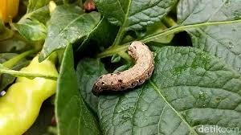

Kutu Daun (Aphids)

Gejala: Daun keriting, pertumbuhan terhambat, dan exudate lengket.
Penanganan:
- Menggunakan insektisida nabati seperti neem oil.
- Menggunakan predator alami seperti ladybugs.
- Memangkas bagian tanaman yang terinfeksi.
Ulat Grayak (Spodoptera exigua)

Gejala: Daun dimakan, terutama bagian tepi.
Penanganan:
- Menggunakan insektisida kimia atau nabati.
- Melakukan pengendalian mekanik dengan memungut ulat.
- Menggunakan perangkap feromon untuk mengurangi populasi.
Kumbang Daun (Coleoptera)
Gejala: Kerusakan pada daun, menyebabkan lubang-lubang.
Penanganan:
- Menggunakan insektisida.
- Menjaga kebersihan lahan dan menghilangkan sisa-sisa tanaman.
- Memasang perangkap untuk mengurangi populasi.
Penggerek Batang (Borer)
Gejala: Lubang pada batang dan daun, tanaman layu.
Penanganan:
- Menggunakan insektisida sistemik.
- Memangkas bagian tanaman yang terinfeksi.
- Sanitasi lahan untuk mencegah infestasi lebih lanjut.
Tungau (Mite)
Gejala: Daun menguning, bercak kecil, dan jaringan daun yang mengering.
Penanganan:
- Menggunakan akarisida.
- Meningkatkan kelembapan di sekitar tanaman.
- Menggunakan air untuk menyemprot daun dan menghilangkan tungau.